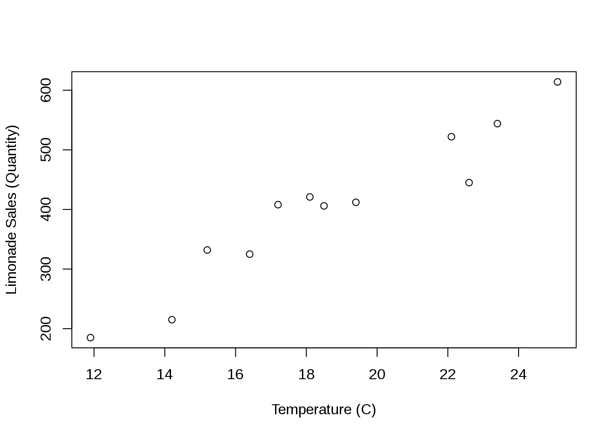
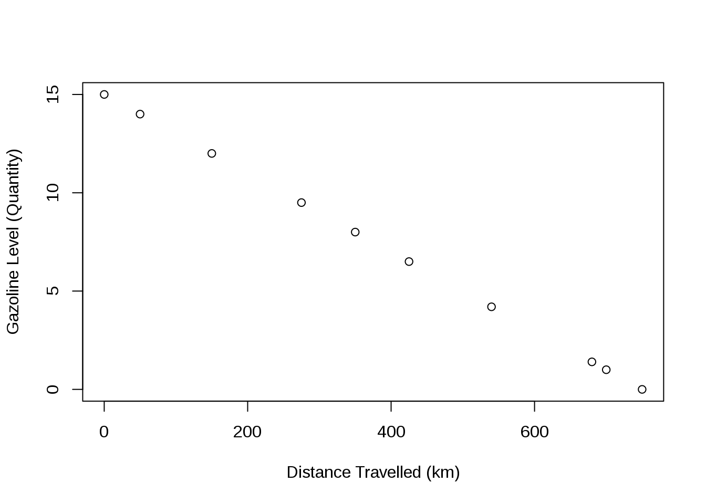
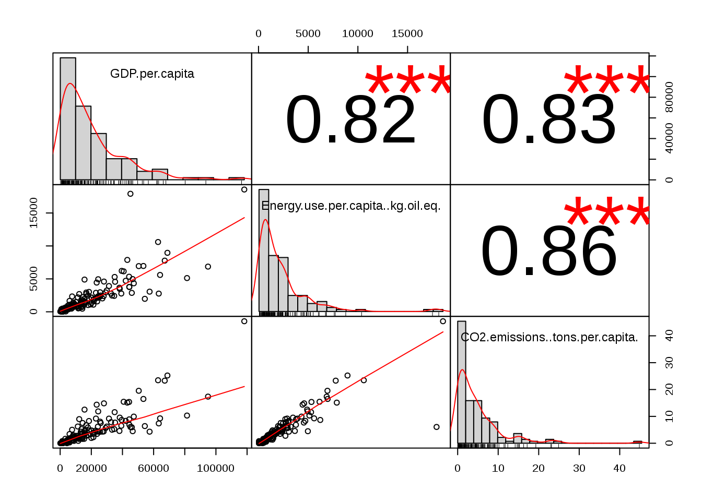
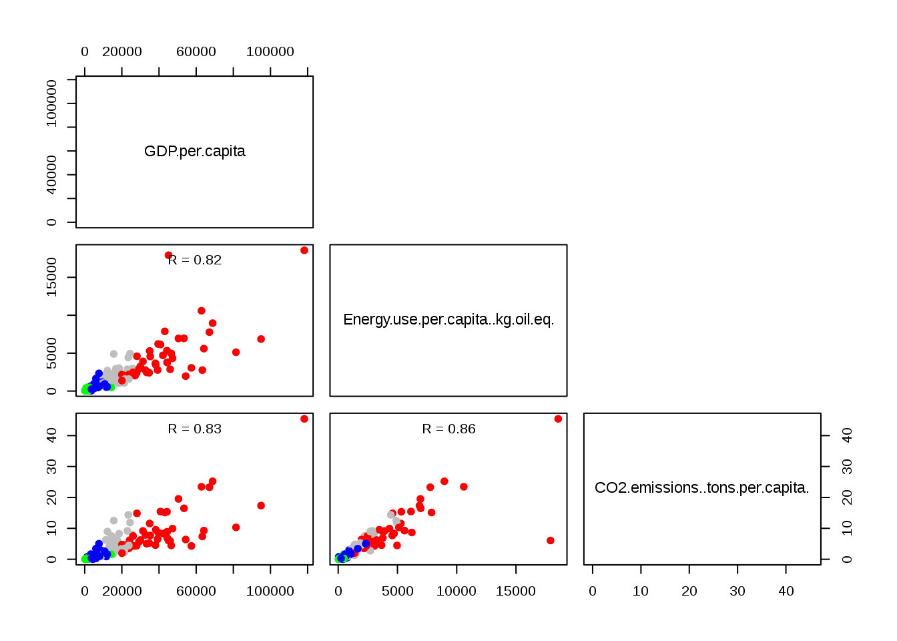
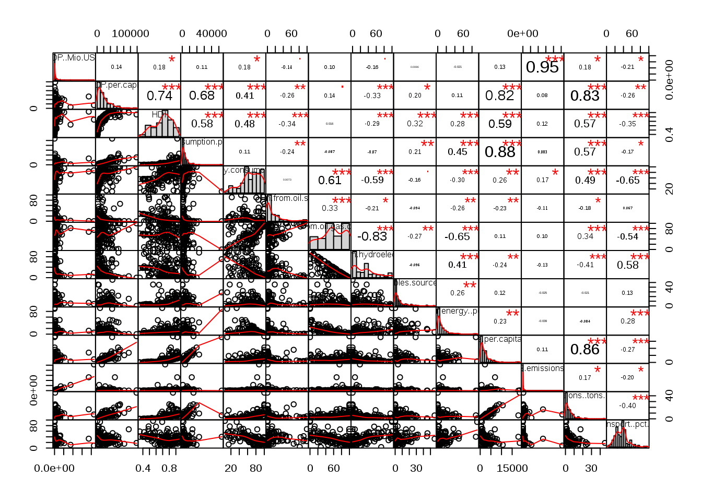

Income, Energy Consumption and CO2-Emissions with R Notebook

Introduction
This is an R Markdown Notebook. In this document, the analysis from the last Google Sheets Document will be extended by:
Visualizing in R the relationships between Income, Energy consumption and CO2-emission,
Incrementing the dataset with further Energy- and CO2-emissions related variables, and thereafter expand the previous correlation matrix with additional Income-, Energy- and CO2-emissions-related variables,
Performing a Cluster Analysis based on a Multivariate Factor Analysis (MFA), a method that aims at synthesizing the information from all available data on Income, Energy and CO2-emissions.
Visualizing the results from the Cluster Analysis on ArcGIS.
The considered dataset was used in an earlier project on Sustainable Energy Consumption - hence not up to date - and was sourced from the World Bank.
Premilimary Illustrations
To illustrate the revolving idea behind how some variables relate to each others, i.e. the notion of relationships or correlation (sammenhæng), let’s start these 2 common examples found on the net.
Consider first the amount of limonade sold in function of the day’s temperature.
sales <- data.frame(c(14.2, 16.4, 11.9, 15.2, 18.5, 22.1, 19.4, 25.1, 23.4, 18.1, 22.6, 17.2),
c(215, 325, 185, 332, 406, 522, 412, 614, 544, 421, 445, 408))
colnames(sales) <- c("Temperature (C)","Limonade Sales (Quantity)")
sales## Temperature (C) Limonade Sales (Quantity)
## 1 14.2 215
## 2 16.4 325
## 3 11.9 185
## 4 15.2 332
## 5 18.5 406
## 6 22.1 522
## 7 19.4 412
## 8 25.1 614
## 9 23.4 544
## 10 18.1 421
## 11 22.6 445
## 12 17.2 408The values can be represented graphically as below.
plot(sales)
As can be seen, there seems to be a relationship between the amount of limonade sold and the temperature of the day, and a positive one.
In contrast, consider the amount of gazoline left in the tank of a car as the car travels a certain distance.
tankLevel <- data.frame(c(0, 50, 150, 275, 350, 425, 540, 680, 700, 750),
c(15, 14, 12, 9.5, 8, 6.5, 4.2, 1.4, 1, 0))
colnames(tankLevel) <- c("Distance Travelled (km)","Gazoline Level (Quantity)")
tankLevel## Distance Travelled (km) Gazoline Level (Quantity)
## 1 0 15.0
## 2 50 14.0
## 3 150 12.0
## 4 275 9.5
## 5 350 8.0
## 6 425 6.5
## 7 540 4.2
## 8 680 1.4
## 9 700 1.0
## 10 750 0.0Graphically,
plot(tankLevel)
Again, there appears to be a relationship between the amount of distance travelled and the level of gazoline in the tank of the car. Although this time, even more clearly, the graph demonstrates a negative relationship.
Sustainable Energy Consumption
Now that the idea of relationship, or correlation, has been introduced, let’s shift back to the analysis considered at the beginning of the document. Among the questions that the analysis will try to answer, here are a few ones:
Do average income, energy consumption and CO2-emissions of the countries of the world relate to each other?
Do these different patterns of relationship also hold for other income-, energy- and CO2-emissions-related variables?
Given a region or income level, how (dis)similar are countries in terms of Energy Consumption and CO2-emissions?
The analysis will be carried out in R and requires the use of the following packages (a collection of many functions):
library(tidyverse)
library(PerformanceAnalytics)
library(gdata)
library(FactoMineR)
library(missMDA)
library(sp)
# library(arcgisbinding)To start, let’s read the available data on Income, Energy Consumption and CO2-emissions.
Energy_comp = read.csv("https://sanktpetriskole.maps.arcgis.com/sharing/rest/content/items/c52d0e61a2b44240b1a76a012d18664d/data",
header=TRUE,sep=",", dec=".",
row.names = 1)
dim(Energy_comp)## [1] 147 18As can be seen, the data consists of 147 countries of the world, the different regions/categories they belong to and the 3 afore-mentioned variable groups with 18 columns in total.
Let’s have a preview of the dataset:
head(Energy_comp, 10)## Country.Name Region Income.Group
## AFG Afghanistan South Asia Low income
## AGO Angola Sub-Saharan Africa Lower middle income
## ALB Albania Europe & Central Asia Upper middle income
## ARE United Arab Emirates Middle East & North Africa High income
## ARG Argentina Latin America & Caribbean Upper middle income
## ARM Armenia Europe & Central Asia Lower middle income
## AUS Australia East Asia & Pacific High income
## AUT Austria Europe & Central Asia High income
## AZE Azerbaijan Europe & Central Asia Upper middle income
## BDI Burundi Sub-Saharan Africa Low income
## Population GDP..Mio.USD. GDP.per.capita HDI
## AFG 34656032 65142.8 1802.7 0.479
## AGO 28813463 186327.0 5984.6 0.533
## ALB 2876101 34126.4 11359.2 0.764
## ARE 9269612 672419.6 67133.1 0.840
## ARG 43847430 876012.1 18489.4 0.827
## ARM 2924816 25884.4 8190.2 0.743
## AUS 24127159 1128908.0 44260.6 0.939
## AUT 8747358 443005.0 44438.7 0.893
## AZE 9762274 168713.8 16001.3 0.759
## BDI 10524117 8201.1 721.2 0.404
## Electricity.Consumption.per.capita..kWh
## AFG 10.00
## AGO 312.48
## ALB 2309.37
## ARE 11263.53
## ARG 3052.38
## ARM 1965.78
## AUS 10059.21
## AUT 8360.52
## AZE 2202.39
## BDI 10.00
## Fossil.fuel.energy.consumption..pct..of.total.
## AFG 56.31438
## AGO 48.28000
## ALB 61.42000
## ARE 99.81000
## ARG 88.54000
## ARM 74.56000
## AUS 93.39000
## AUT 64.90000
## AZE 98.37000
## BDI 55.73222
## Electricity.production.from.oil.sources..pct..of.total.
## AFG 24.65847
## AGO 46.82000
## ALB 0.00000
## ARE 1.34000
## ARG 13.83000
## ARM 0.00000
## AUS 2.02000
## AUT 0.99000
## AZE 0.16000
## BDI 27.22136
## Electricity.production.from.oil.gas.coal.sources..pct.of.total.
## AFG 57.28404
## AGO 46.82000
## ALB 0.00000
## ARE 99.73000
## ARG 64.39000
## ARM 42.44000
## AUS 85.09000
## AUT 17.73000
## AZE 94.02000
## BDI 59.32039
## Electricity.production.from.hydroelectric.sources..pct.of.total.
## AFG 37.86226
## AGO 53.18000
## ALB 100.00000
## ARE 0.00000
## ARG 29.04000
## ARM 25.70000
## AUS 7.41000
## AUT 66.57000
## AZE 5.26000
## BDI 37.62264
## Electricity.production.from.renewables.sources...excl..hydroelectric..pct.of.total.
## AFG 3.689814
## AGO 0.000000
## ALB 0.000000
## ARE 0.270000
## ARG 2.500000
## ARM 0.050000
## AUS 7.500000
## AUT 14.560000
## AZE 0.370000
## BDI 2.937671
## Alternative.and.nuclear.energy..pct..of.total.energy.use.
## AFG 5.081635
## AGO 2.950000
## ALB 17.920000
## ARE 0.100000
## ARG 5.880000
## ARM 27.510000
## AUS 2.550000
## AUT 12.870000
## AZE 0.780000
## BDI 3.303454
## Energy.use.per.capita..kg.oil.eq. CO2.emissions..kt.
## AFG 50.00 9809.23
## AGO 545.04 34763.16
## ALB 808.46 5716.85
## ARE 7769.23 211369.55
## ARG 2015.19 204024.55
## ARM 1018.07 5529.84
## AUS 5328.22 361261.84
## AUT 3765.43 58712.34
## AZE 1502.08 37487.74
## BDI 50.00 440.04
## CO2.emissions..tons.per.capita.
## AFG 0.30
## AGO 1.29
## ALB 1.98
## ARE 23.30
## ARG 4.75
## ARM 1.90
## AUS 15.37
## AUT 6.87
## AZE 3.93
## BDI 0.04
## CO2.emissions.from.transport..pct.of.total.fuel.combustion.
## AFG 39.70712
## AGO 43.99000
## ALB 59.95000
## ARE 21.04000
## ARG 24.17000
## ARM 27.78000
## AUS 24.74000
## AUT 36.62000
## AZE 24.49000
## BDI 40.07004A summary of the dataset follows:
print(summary(Energy_comp))## Country.Name Region
## Namibia : 2 East Asia & Pacific :17
## Afghanistan: 1 Europe & Central Asia :47
## Albania : 1 Latin America & Caribbean :23
## Algeria : 1 Middle East & North Africa:17
## Angola : 1 North America : 2
## Argentina : 1 South Asia : 7
## (Other) :140 Sub-Saharan Africa :34
## Income.Group Population GDP..Mio.USD.
## High income :46 Min. :3.195e+04 Min. : 100
## Low income :23 1st Qu.:4.733e+06 1st Qu.: 38279
## Lower middle income:36 Median :1.065e+07 Median : 153199
## Upper middle income:42 Mean :4.801e+07 Mean : 796355
## 3rd Qu.:3.547e+07 3rd Qu.: 510809
## Max. :1.379e+09 Max. :21450968
##
## GDP.per.capita HDI Electricity.Consumption.per.capita..kWh
## Min. : 100 Min. :0.3520 Min. : 10.0
## 1st Qu.: 5219 1st Qu.:0.6115 1st Qu.: 579.2
## Median : 13921 Median :0.7360 Median : 2202.4
## Mean : 19788 Mean :0.7100 Mean : 3911.1
## 3rd Qu.: 26569 3rd Qu.:0.8285 3rd Qu.: 5032.5
## Max. :118207 Max. :0.9490 Max. :53832.5
##
## Fossil.fuel.energy.consumption..pct..of.total.
## Min. : 5.36
## 1st Qu.: 54.28
## Median : 67.99
## Mean : 65.89
## 3rd Qu.: 85.48
## Max. :100.00
##
## Electricity.production.from.oil.sources..pct..of.total.
## Min. : 0.00
## 1st Qu.: 0.35
## Median : 2.84
## Mean :15.04
## 3rd Qu.:22.68
## Max. :99.46
##
## Electricity.production.from.oil.gas.coal.sources..pct.of.total.
## Min. : 0.00
## 1st Qu.: 38.20
## Median : 58.02
## Mean : 57.88
## 3rd Qu.: 86.47
## Max. :100.00
##
## Electricity.production.from.hydroelectric.sources..pct.of.total.
## Min. : 0.000
## 1st Qu.: 4.495
## Median : 27.610
## Mean : 30.089
## 3rd Qu.: 41.600
## Max. :100.000
##
## Electricity.production.from.renewables.sources...excl..hydroelectric..pct.of.total.
## Min. : 0.000
## 1st Qu.: 0.125
## Median : 3.056
## Mean : 6.499
## 3rd Qu.: 7.235
## Max. :55.830
##
## Alternative.and.nuclear.energy..pct..of.total.energy.use.
## Min. : 0.00
## 1st Qu.: 1.33
## Median : 5.11
## Mean :10.22
## 3rd Qu.:12.29
## Max. :91.98
##
## Energy.use.per.capita..kg.oil.eq. CO2.emissions..kt.
## Min. : 50.0 Min. : 50
## 1st Qu.: 542.3 1st Qu.: 6302
## Median : 1337.4 Median : 26450
## Mean : 2213.2 Mean : 224420
## 3rd Qu.: 2771.2 3rd Qu.: 95844
## Max. :18562.7 Max. :10291927
##
## CO2.emissions..tons.per.capita.
## Min. : 0.010
## 1st Qu.: 0.840
## Median : 3.050
## Mean : 4.786
## 3rd Qu.: 6.220
## Max. :45.420
##
## CO2.emissions.from.transport..pct.of.total.fuel.combustion.
## Min. : 3.54
## 1st Qu.:23.60
## Median :34.78
## Mean :34.05
## 3rd Qu.:40.51
## Max. :96.78
## PS: the existence of missing values for some variables was dealt with imputation methods from the package missMDA. Suffice to write here that the original dataset was trimmed of some countries that lack many values, while at the same time, 37 countries were kept for the analysis by imputing some of their missing values using the correlation structure of the dataset. Refer to this App to compare the analysis with complete observations (110) and the one based on the augmented dataset (the current one) with imputed observations (147).
Simple correlations from the lecture’s dataset
With this dataset, one can visualize the few correlations introduced in the Google Sheets Document. This is done with the package PerformanceAnalytics as follows.
chart.Correlation(Energy_comp[,c(6,15,17)], histogram=TRUE, pch=19)
Focusing first on the scatterplots, the graphical matrix could be read as one read for example a multiplication table, that is reading the rows first and then the columns: There, were the row belonging to Energy Use per Capita meets the column of GDP per Capita, the scatter-plot suggests a rather pronounced correlation between these 2 variables, although the correlation between Energy Use per Capita and CO2 Emissions per Capita appears to be slightly more significant. Not surprisingly given the well-known fact that fossile fuels still account for about 80 pct. of total energy consumed on the global level, far ahead of the share of renewable energy sources (around 10 pct.) as discussed during the lectures.
The 3 scatterplots can be drawn once more, this time visualizing the income groups each country (point) pertains to:
lower.panel<-function(x, y){
points(x,y, pch=19, col=c("red", "green", "blue", "grey")[Energy_comp$Income.Group])
r <- round(cor(x, y), digits=2)
txt <- paste0("R = ", r)
usr <- par("usr"); on.exit(par(usr))
par(usr = c(0, 1, 0, 1))
text(0.5, 0.9, txt)
}
pairs(Energy_comp[,c(6,15,17)], upper.panel = NULL,
lower.panel = lower.panel) PS: The colour conventions are:
- Red for high income countries
- Green for low income countries
- Blue for lower middle income countries
- Grey for upper middle income countries
Extended Correlation Structure
In the same fashion, one can expand the correlation matrix to include the remainder of the continuous variables at hand:
chart.Correlation(Energy_comp[,c(5:18)], histogram=TRUE, pch=19)
Given the difficulty to distinguish between the details in such a graphical illustration, one can list the strongest correlations among all variables. This have been carried out in the next code chunk. In passing, note that the strongest relationships in the matrix are suggested by the number of red stars (3 means likelier relationships) or the numerical value of the correlation coefficient (stronger correlations where the coefficient is closer to 1 in absolute terms). Any biasing effects from outliers have been ignored.
corm <- cor(Energy_comp[,c(5:18)])
corm[lower.tri(corm)] <- 0
corm[lower.tri(corm,diag=TRUE)] <- 0
cor <- as.data.frame(as.table(corm))
high<-subset(cor, abs(Freq) > 0.6)
as.matrix(high[order(-high[,3]),])## Var1
## 155 "GDP..Mio.USD."
## 144 "Electricity.Consumption.per.capita..kWh"
## 179 "Energy.use.per.capita..kg.oil.eq."
## 170 "GDP.per.capita"
## 142 "GDP.per.capita"
## 30 "GDP.per.capita"
## 44 "GDP.per.capita"
## 89 "Fossil.fuel.energy.consumption..pct..of.total."
## 187 "Fossil.fuel.energy.consumption..pct..of.total."
## 133 "Electricity.production.from.oil.gas.coal.sources..pct.of.total."
## 105 "Electricity.production.from.oil.gas.coal.sources..pct.of.total."
## Var2
## 155 "CO2.emissions..kt."
## 144 "Energy.use.per.capita..kg.oil.eq."
## 179 "CO2.emissions..tons.per.capita."
## 170 "CO2.emissions..tons.per.capita."
## 142 "Energy.use.per.capita..kg.oil.eq."
## 30 "HDI"
## 44 "Electricity.Consumption.per.capita..kWh"
## 89 "Electricity.production.from.oil.gas.coal.sources..pct.of.total."
## 187 "CO2.emissions.from.transport..pct.of.total.fuel.combustion."
## 133 "Alternative.and.nuclear.energy..pct..of.total.energy.use."
## 105 "Electricity.production.from.hydroelectric.sources..pct.of.total."
## Freq
## 155 " 0.9527348"
## 144 " 0.8760625"
## 179 " 0.8594627"
## 170 " 0.8343659"
## 142 " 0.8151981"
## 30 " 0.7420396"
## 44 " 0.6840740"
## 89 " 0.6123586"
## 187 "-0.6460173"
## 133 "-0.6515375"
## 105 "-0.8331979"The correlation coefficients are arranged in descending order, and the ones of interest are those that are closest to 1 in absolute values.
Hence, there seems to be further relevant correlations among the variables from the extended dataset. To name a few …
On the positive side:
Total income and total CO2-emissions,
Electricity Consumption and Energy Use per capita,
On the negative side:
Electricity production from fossile fuels and from hydroelectric sources
Electricity production from fossile fuels and from alternative and nuclear energy
This seems in line with general intuition and corroborates earlier observations.
Hierarchical Clustering
Moving now the focus towards the study of the many countries of the world and how (dis)similar they are with respect to each other in term of income, energy use and CO2-emissions, the many variables at hand can be synthethised to help us better answer a few additional questions:
Are there group of countries that shows the same pattern of income level, energy consumption and CO2-emissions?
If so, which cluster of countries shows similarities or, by contrast, dissimilarities in terms of income level, energy consumption and CO2-emissions?
These questions and many others can be answered by means of a Cluster Analysis, and the chosen method is hierarchical clustering, the one that by default is provided by the library FactoMineR.
Prior to this, a Multivariate Factor Analysis was undertaken so as to reduce the multidimensionality of the dataset, but at the same time, to take into account the grouped nature of the dataset’s variables. This can be helpful when it comes to group the 147 countries into different clusters and characterise each resulting clusters by means of the synthetic variables that emerge from such an analysis.
The detailed outline of this analysis is skipped, but the relevant code chunks are provided as follows:
res <- MFA(Energy_comp[,c(2:18)], group=c(1,1,2,2,8,3), type=c(rep("n",2),rep("s",4)),
ncp=4, graph=F, name.group=c("Region","IncomeGroup","Desc","Income","Energy","Emmissions"),
num.group.sup=c(2:3))res.hcpc <- HCPC(res, kk = Inf, graph=F)Once the different clusters have been obtained (their numbers specified with some degree of subjectivity, see later), these can be transferred and mapped in ArcGIS.
Here is also a screenshot of the resulting clustering.
When it comes to interpretate the resulting clustering, the different outputs from the above 2 code chunks are handy. Keeping it short, among the main observations that can be derived from the outputs:
Cluster 5: Countries with respectively high income, energy use and CO2-emissions per capita.
Cluster 1: Countries with respectively low income, energy use and CO2-emissions per capita.
Cluster 4: Countries with high total income, energy use and CO2-emissions.
Cluster 3: Countries with relatively:
high proportion of alternative and nuclear energy content in their total energy use; high proportion of electricity production from hydroelectric sources; high proportion of CO2-emissions from transport as a percentage of total fuel combustion; high electricity consumption per capita.
Low proportion of electricity production from fossil fuel sources; low proportion of fossil fuel energy consumption as a percentage of total energy use.
Cluster 2: In contrast with Cluster 3, these are countries with relatively:
high proportion of fossil fuel energy consumption as a percentage of total energy use; high proportion of electricity production from fossil fuel sources; high HDI (Human Development Index).
low proportion of CO2-emissions from transport as a percentage of total fuel combustion; low proportion of electricity production from hydroelectric sources; low proportion of alternative and nuclear energy content in their total energy use;
In the same token, focusing on the 2 categorical variables of the analysis, namely Regions and IncomeGroup, the following observations can be made from the code output:
Cluster 1 tend to be overrepresented by Sub-Saharan and Low Income countries.
Cluster 2 contains a higher proportion of Upper Middle Income countries and European/Central Asian countries.
Cluster 3 are all High Income countries, most of which are European/Central Asian.
Cluster 5 are all High Income countries, most of them belonging to the Middle East and North African regions.
Final thoughts
Cluster analysis, along with Multivariate Factor Analysis, are methods used to synthethise available information in a given dataset that usually contains more than 10 variables. From this preliminary analysis:
Most of the results - notwithstanding the outdated nature of some variables (a few dating back from 2011) - are in line with what one would expect from the relationships between Income, Energy Consumption and CO2-emissions.
A few countries have been surprisingly clustered with others e.g. across different income groups, something that seems to contradict common understanding. Given the use of MFA as the preliminary tool for dimensionality reduction, these artifacts, that by themselves deserve checking the original dataset and/or further investigations, could a priori be justified by the rebalancing nature of the MFA-methodology: no group among the afore-mentioned 3 is allowed to outweight the other 2 when it comes to define the primary components of variability in the dataset. A cluster analysis based on a standard PCA would have resulted in different clusterings, arguably more in line with common intuition.
The defined numbers of clustering is to some extent a matter of subjectivity (albeit a few criteria exists to optimally define the right ratio between inter and total inertia), and a different level of clustering would probably have made this analysis either too simplistic (loosing some interesting insigths, which this analysis has already done by only accounting for the first 2 dimensions of variability representing slightly above 50 pct. of all information in the dataset) or too detailed to easily discern common patterns between the dataset’s observations.
These limitations and other warrants further study of such an interesting topic.